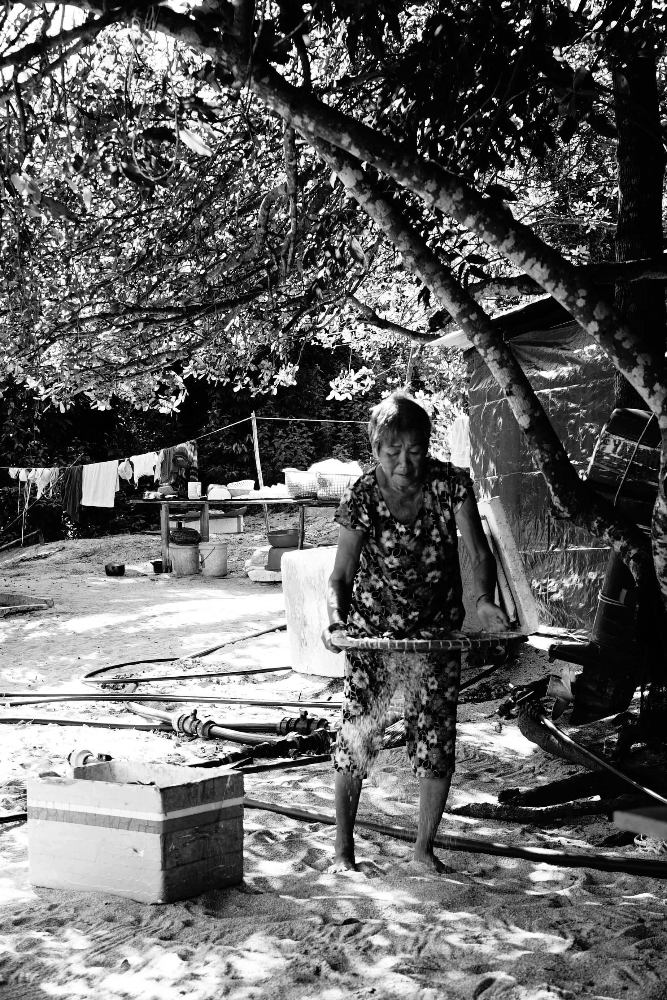

Bien avant les frontières modernes, un peuple parcourait déjà les eaux de la mer d'Andaman. Les Moken vivent depuis des générations au plus près de l'océan. À bord de leurs Kabang, ils naviguent entre les îles, pêchent, plongent et transmettent leurs connaissances de la mer. Aujourd'hui encore, leur mode de vie fascine les chercheurs et témoigne d'une relation unique entre l'être humain et son environnement.
Les Moken vivent principalement entre la Thaïlande et le Myanmar.
Les Moken vivent principalement dans les eaux du Myanmar (ex Birmanie) et de la Thaïlande. Clique sur le pays correspondant pour poursuivre.